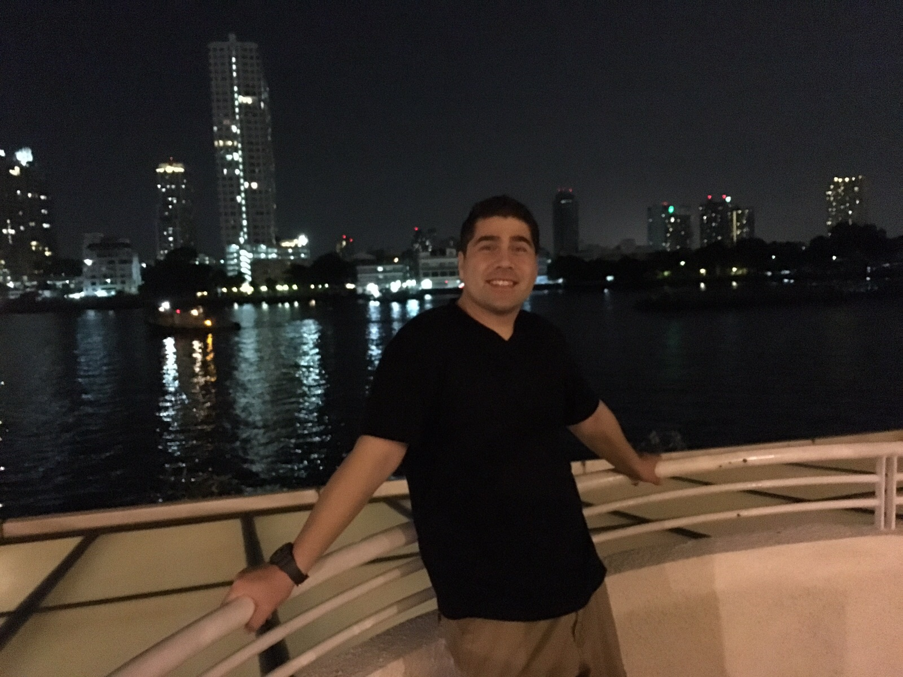
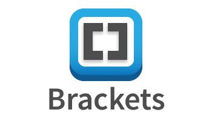

John R. Adams
Technical Game Designer
Orlando, FL, U.S.A.
johnrusselladamsjr@gmail.com
1-407-969-5719
Technical Skills
.png) |
 |
|
|
|---|---|---|---|
 |
|
 |
Design
| |
|
|
|
|---|---|---|---|
| |
|
Software
| |
 |
|
|
|---|---|---|---|
|  |
Certifications
 |
|---|
Teamwork Skills
 |
|||
|---|---|---|---|
| Agile-Scrum Methodology | Strategic Thinker | Problem Solver |
Languages
English
Mandarin Chinese
French
Hobbies
| Hiking | D & D | Video Games |
|---|---|---|
| Cooking | Traveling | Reading |
| Volunteering | Creative Writing | History |
Game Development Projects
Game Makers Tool Kit Game Jam 2021 - Technical Designer | UI Designer
June 11th to 13th - Orlando, FL
- Designed Menu UI System including the Main Menu, Controls Menu, Credits Menu.
- Developed the final Main Menu with Vignette Scene for the submission of the game.
Gauntlet Challenge - Technical Designer
Feb 2021 - Apr 2021 - Orlando, FL
- Created Enemy AI Actors for prototype The Outpost that tracks player movement and attacks in range.
- Developed environmental assets to provide narrative background for prototype.
Game Lab - Technical Designer
Jan 2021 - Apr 2021 - Orlando, FL
- Designed UI and UI logic on the Sea Fox Project for Lockheed Martin.
- Created spawning object volume to randomly spawn mines to test submarine player AI.
Rapid Prototype Production - Technical Designer
Nov 2020 - Dec 2020 - Orlando, FL
- Wrote the game design document and narrative script for the prototype, The Strayhouse.
- Created audio components in UE4 using Blueprints visual scripting.
Work Experience
Technical Designer - Wolf Packtics
Apr 2021 - Current - Orlando, FL
- Worked on Zenko: A Fox’s Tale, a 3D Platformer developed in UE4 with a team of 16.
- Designed main menu UI and develop Blueprint logic in UE4 to allow levels to be selected from main menu.
- Produced VFX for spirit actors using UE4 to create spectral effects.
- Created environmental assets using spline tools for a dynamic environment.
- Prototyped game mechanics with Blueprint visual scripting to test game design concepts.
Project Lead - Electronic Revolution Studios
Oct 2020 - Apr 2021 - Orlando, FL
- Worked on The Last Spark, a 3D Platformer developed in UE4 with a team of 13.
- Managed scope to keep goals and timeline aligned.
- Provided status updates to report milestones and future commitments.
- Conducted data analysis to determine the utilization of hours and to determine progress of the project.
- Prototyped game mechanics in UE4 using Blueprint visual scripting to implement gameplay design.
Full-Stack Web Developer - Finfrock Technologies
Sept 2019 - Oct 2020 - Orlando, FL
- Developed front-end web application and responsive web design utilizing HTML5, CSS3,Bootstrap,JavaScript,JQuery, and Kendo UI framework to produce both desktop and mobile web applications.
- Utilized Kendo UI ASP.NET MVC Framework to program asynchronous web widgets to populate data into web page.
- Developed back-end programming logic using C# a MVC web application to aid in manipulation of user-input and database access retrieval.
- Developed and maintained Data-Transfer-Objects (DTOs) that connect to SQL stored procedures for database creation, reading,updating, and deleting of data for the MVC web application.
- Used Azure Dev Ops (TFS) to maintain application version control to pull, push, merge, and commit developed code to the main branch for review.
Software Developer - Prosper IT Consulting
Sept 2019 - Oct 2020 - Portland, OR
- Utilized Entity Framework Code First Method to develop web applications with product models that populate and update data dynamically from website API requests.
- Implemented Model-View-Controller Web Application Framework to develop websites for clients that can take user input to manipulate data dependent on application requirements and then store the user data within a SQL database.
- Used Microsoft SQL Server and Entity Framework to develop databases to store client data which can be linked to the MVC application.
- Utilized Azure Dev Ops to maintain application documentation, commit to user-stories, complete tasks, and have tasks completed.
- Provided daily stand-ups to communicate with team members of user-completions, current user-stories, and any roadblocks facing.
Web Developer/Professional Development Coordinator - King Fahad University of Petroleum and Minerals
Nov 2017 - June 2019 - Dhahran, Saudi Arabia
- Developed the front-end of department website utilizing HTML5 and CSS3.
- Uploaded and edited content of website by integrating Microsoft SharePoint onto the back-end of website.
- Provided front-end development consultation for the ESL department regards to their web page needs.
- Created training material for online Learning Management System(LMS) for professors to learn LMS.
- Provided training and technical support for online learning management system.
English Language Instructor - King Saud University - The PY Program - ELS Department
Aug 2015 - Oct 2017 - Riyadh, Saudi Arabia
- Taught students both general and academic English utilizing communicative and CELTA teaching methods.
- Taught English for medical purposes for advanced level students in the medical science track.
- Utilized formative and summative assessments to determine the progress of students.
- Provided lead volunteer support in logistics and planning for the Professional Development Week.
- Instructed Continuous Assessment Projects for both presentation and writing skills.
English Language Instructor - ELS Language Centers
Mar 2014 - Mar 2015 - Riyadh, Saudi Arabia
- Taught young learner and adult students both general English and English for specific purposes.
- Taught English utilizing the communicative approach and the tasked based learning method.
- Managed grading and comments system to insure proper feedback for students.
- Implemented computer assisted learning to aid students in acquiring language proficiency.
- Administered student register and curriculum audits on a timely manner for management.
ESL Instructor - Acadia TESOL Academy
Sept 2013 - Feb 2014 - Zhuhai, China
- Taught adult learners communicative English through the communicative approach and through task-based learning methods.
- Provided ESL teacher training and mentorship through workshops and classes.
- Created teaching materials for teachers in training to assure proper teaching methodologies.
- Designed marketing materials such as brochures and posters for the marketing campaign.
- Provided demo lessons for marketing purposes of the school.
Native English Teacher - Avalon English Academy - Ansan Campus
Sept 2011 - Aug 2013 - Ansan, South Korea
- Taught English as a second language in the areas of speaking, listening, writing, and reading utilizing the communicative approach.
- Specialized in teaching creative writing and academic writing in the areas of narrative writing, descriptive writing, argumentative writing, expositional writing, and independent and integrated writing
- Implemented computer assisted learning to aid students in acquiring language proficiency.
- Provided coaching and training to students for debate and presentations.
- Provided demo lessons for parents and future students.
Education
Florida Interactive Entertainment Academy (FIEA) at the University of Central Florida
Aug 2020 - Aug 2021 - Orlando, FL
M.S. in Interactive Entertainment
Production Track - Specialization in Technical Design
Concentration Areas:
- Blueprints Visual Scripting
- C# Programming
- Systems, Game Mechanics, & Rapid Prototyping
- Game Design & Development
- Production, Project Management, & Jira Administration
The Tech Academy - A Professional Coding Trade School
Apr 2019 - Aug 2019 - Portland, OR
Certificate in Software Development
Specialization in C# & .NET Framework
Concentration Areas:
- C# & .NET programing using the MVC Design Pattern
- Database development and deployment using Microsoft SQL Servr
- Version Control with GitHub and Microsoft TFS
- Project Management with Azure DevOps
- Web design using HTML5, CSS3, Bootstrap, JavaScript, React.JS, and JQuery
Georgetown University
Jan 2007 - May 2009 - Washington, D.C.
M.A in Liberal Studies
Major in International Affairs
Concentration Areas:
- Sino-U.S. Foreign Policy
- International Business
- Security Studies
University of Central Florida
Aug 1998 - May 2004 - Orlando, FL
B.A in Political Science
Major in International Relations & Comparative Politics
Concentration Areas:
- International Organizations
- Foreign Government Organization, Structure, Policies, and Procedures
- International Economies